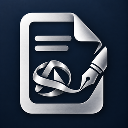

Editovelle Docs
在手機完成日常文件修正
簽署與標註 PDF，保留原檔，另存副本再分享。支援的文件格式與編輯能力依平台及版本而異，請以商店資訊與 App 實際顯示為準。
Everyday document corrections on your phone
Sign and mark up PDFs, keep the original, and save or share a separate copy. Supported formats and editing capabilities vary by platform and version; check the store listing and the options shown in your app.
Document processing stays on your device. Ads and enabled store entitlement services use the network as described in our privacy policy.
Get support